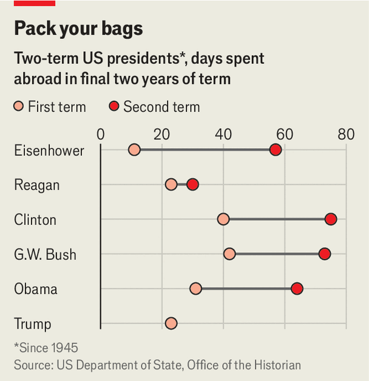

曾为比尔·克林顿担任顾问的道格·索斯尼克，回忆起总统在白宫最后阶段那种近乎疯狂的日程安排。“我们讨论日程，讨论还能多跑几趟——你介意一天干18个小时吗？”克林顿是个赶时间的人。“我在任上只剩一年了，”他说，“剩下的日子都可以用来睡觉。”
现在，这只时钟开始为唐纳德·特朗普走了。过去十年，他是美国政治当之无愧的主角。但11月3日，他成了继2006年小布什之后，第二位在任期末尾、在两院都握于己手时打最后一场中期选举、并且两院全丢的总统——连他自己都震惊。“哇，”得知共和党在南卡罗来纳这个昔日“MAGA”重镇失守时，他对《纽约时报》说，“太不可思议了。”
在任期的最后两年，特朗普将在国内处处受困，同时直面自己政治生命的终点。国会曾在他所属的共和党掌控下被他搞得几乎无足轻重，如今会用一连串关于腐败与滥用权力的听证和传票淹没他的政府。（一位议员在X上建议：“赶紧找律师。”）国会还会逼他否决一些受欢迎的政策，比如恢复医疗拨款。民主党人也会设法拦住他在首都那些满足虚荣心的工程：他的大宴会厅和凯旋门。但他仍将拥有最大、最不受约束影响力的地方在海外——他会去那里找怪物来杀，找政治遗产来留。
特朗普的外交政策——从委内瑞拉到格陵兰再到伊朗——一向激进且高频。现在可能更甚。他在伊朗和古巴都有未了之事，可能把美国更深地拖进中东和拉美。他热衷于大国瓜分势力范围，包括与普京和习近平举行峰会，这可能预示一个更黑暗的世界秩序——也会给乌克兰带来麻烦。他对朝鲜领导人金正恩那种堂吉诃德式的示好，可能颠覆美国的核政策。这一切还将发生在人工智能一路奔向通用人工智能的背景下，由此产生的外交与国家安全难题，都要落到特朗普头上。
对世界来说，即便换一位有外交天赋、有赫拉克勒斯般工作伦理、注意力跨度正常的总统，这一切也已经够让人担心。特朗普不仅不具备这些品质，还可能在危机来临时失去那些有经验的幕僚——这也是跛脚鸭时期的常见现象。未来两年，总统在海外的冒险注定混乱、难以预测，未必要有成果。

chart: the economist
在终点临近时到海外寻找慰藉，特朗普并不特殊。《经济学人》分析了可追溯到哈里·杜鲁门时期的总统出访记录。结果显示，总统在第二任期的最后两年通常在海外的活动明显更频繁（见图表）。小布什在2008年有50天在海外，是他此前年均水平的两倍。2006年中期选举失利后，他不顾国会激烈反对，下令向伊拉克增兵，希望挽救一场已经严重走偏的战争。奥巴马在第二任期最后两年的出访天数，是第一任期最后两年的两倍。他与伊朗那份全面的核协议，就出现在2014年中期选举受挫之后的一年。“总统到了任期尾声，会对各种约束感到沮丧，”智库美国企业研究所的尤瓦尔·莱文说，他曾在布什政府任职，“而外交政策恰恰是约束最少的地方。”
特朗普就像一个看到观众腻了便更换节目的班主，总被那些能让批评者摸不着头脑、并在他自己看来能展示实力的外交动作吸引。他长期吹嘘自己的谈判本领，最出名的一句是能在一天之内结束乌克兰战争——11月1日的中期选举集会上，他又说自己一周就能打赢越南战争。因此，眼前这场对伊朗的战争打不赢，让他格外难受。双方仍在互相试探，11月2日美国实施了其所称的“防御性”空袭。
直到不久前，特朗普还在倾向于与以色列联手，对伊朗发动18个月内的第三次打击，迫使其完全重开霍尔木兹海峡并限制其核计划。那会引发伊朗对海湾能源设施的报复，让特朗普在接下来几个月里脱不开身。10月28日，民主党参议员克里斯·墨菲说，他已听取关于美国作战计划的情报简报。“我只想说——他们的计划疯了，”墨菲说，并指出公开报道已指向打击民用基础设施，“这将导致毁灭性的升级，也很可能毁掉我们对法治的承诺。”（三天后，墨菲因中风住院。）一位了解规划的人士说，特朗普当时正在考虑是否打击亚洲海域的伊朗油轮。
近几天，其他消息源说特朗普已把这些计划搁置，并告诉以色列总理内塔尼亚胡，美国不会为以色列的袭击背书。已做好打击准备的以军暂停了准备工作。
特朗普若再动手，会遭到多方反对。一是副总统J.D.万斯——也很可能是2028年总统候选人——他在11月4日X上的一则帖子里，明确把中期选举的惨败归咎于这场战争，并说选民想要一种不同的对以关系。二是国会。蓝色浪潮的规模如此之大，这场战争又如此招人厌（与越南战争同级），民主党人可能干脆卡住军费（同时冒着被指“坑前线士兵”的风险）。即便特朗普选择升级，美国也未必还有弹药、防空拦截弹或政治胃口再打一场持久战。特朗普的目标大概是谈成一笔交易，让他能在混战之后以“体面的和平”收场。而伊朗领导层清楚他的政治虚弱，不会轻易服软。
如果伊朗是他外交议程的第一场考试，乌克兰很可能是第二场。这里，总统的报复本能带来危险。特朗普多次把战争归咎于乌克兰，批评乌方打击俄罗斯炼油厂，还贬低乌总统泽连斯基。到目前为止，美国与乌克兰的情报共享、以及经欧洲转手的军售都还在。2025年11月，当美方谈判代表抛出一份不成熟的28点和平计划时，国务卿鲁比奥和欧洲盟友出手删掉了其中最糟糕的部分。每一次，特朗普都在“彻底抛弃乌克兰、彻底倒向俄罗斯”的悬崖边上收了回来。
如果他错误地认定，乌克兰对俄炼油厂的打击是导致油价冲击、进而拖垮共和党选情的主因，他可能再次把怒火对准泽连斯基。2020年，特朗普在相信中国就新冠疫情扩散误导了他之后，反应极为暴怒。类似的“被背叛感”，可能转化为对泽连斯基个人乃至整个乌克兰更凶的压力攻势，目的是逼乌克兰投降。
特朗普中期选举后的心情，11月18日至19日或许可见端倪：届时他与普京将访问中国深圳，出席习近平主持的一场国际峰会。美国的欧洲盟友担心，乌克兰会被摆上菜单。近几个月，特朗普对俄罗斯一让再让：签下购买柴油的协议、以释放一名美国囚犯为条件豁免制裁，部分就是为了把普京引到谈判桌前。普京也许会认为，他再也不会遇到比特朗普更顺从的伙伴。但这位俄罗斯领导人也相信时间站在自己这边，欧洲对乌克兰的支持会慢慢流失。更何况，国会里的民主党人料定会阻挠或拖延特朗普在乌克兰问题上对普京的进一步让步——尤其是任何带着腐败味道的交易。
总统也可能很快（不是第一次）对乌克兰这摊泥潭失去兴趣，转而在自己所在的半球寻找下一个热点：古巴。上任以来，特朗普在经济上勒紧古巴独裁政权，造成岛上停电、食品短缺、医疗体系崩溃。2026年1月，他掳走委内瑞拉领导人马杜罗，斩掉了该国政府的头。据说他很想对古巴复制这套“轻触式政权更替”的模式。
美国的经济战既是要削弱这个政权，也是要分裂其精英阶层，从中可能冒出愿意与美国合作的人——就像委内瑞拉的代理领导人德尔西·罗德里格斯抛弃了马杜罗那样。特朗普并不掩饰目标。“我们从伊朗回来的路上，顺手把古巴办了，”他在10月的竞选活动中夸口。同月，古巴裔鹰派鲁比奥呼吁心怀不满的古巴人跟中情局合作：“对那些想在古巴推动积极变化的人——现在正是时候。”
特朗普渴望成为一位做成前任没能做成之事的总统。他会很享受成为逆转1959年古巴共产主义胜利的那位领导人。但他不是个注重细节的人。在委内瑞拉，他基本上把这个国家的独裁体制保留了下来，只是换掉了领导人，做了一些不干不净的交易，为美国企业拿到石油。一位了解政府内部辩论的人士指出，这种糊弄在古巴要难得多，因为古巴侨民比委内瑞拉侨民更年长、根基更深，他们的愤怒会实实在在地表达出来。
身边若有一批有经验的幕僚，特朗普实现外交目标的概率无疑会高一些。但一场离职潮可能正在发生。兼任国家安全顾问的鲁比奥，一直在悄悄打听私营部门的工作机会。（他可能跳过2028年的总统竞选，指望2032年的条件更有利。）鲁比奥一走，政府内部的平衡就会改变，中情局局长约翰·拉特克利夫可能成为内阁里最有影响力的鹰派。
总统还可能失去他在五角大楼最中意的人。许多民主党人想弹劾好斗、极具争议的战争部长皮特·赫格塞思。很可能出任众议院议长的哈基姆·杰弗里斯没有排除这种可能。
民主党人可能把赶走赫格塞思，作为通过876亿美元追加预算的条件，其中670亿给深陷财务窟窿的战争部。总统在选举惨败后常常要找替罪羊。2006年中期选举失利后，小布什弃用了国防部长拉姆斯菲尔德；2018年共和党丢掉众议院后，特朗普炒掉了时任司法部长塞申斯。
但特朗普更可能以对抗而非忏悔来回应。有人猜测，赫格塞思可能被挪去做国家安全顾问，或者被任命为田纳西州的参议员——该席位将在1月由已当选州长的玛莎·布莱克本空出。有人指出，在参议院他能在一定程度上躲开民主党的调查，包括对他下令打击疑似运毒船只致人死亡一事的调查。
即便赫格塞思留任，特朗普的顾问圈子也已经在变薄。国家安全委员会基本被掏空，导致决策临时化、随意化。专家被成批解雇，导致会议和谈判准备不足。政策可能因个人或小圈子的兴致而摆动——SpaceX创始人、特朗普前顾问马斯克就演示过一次：10月的一场争执中，他的公司似乎切断了乌克兰关键的卫星通信。特朗普的一些特使，无论官方还是非官方，都把外交与追逐利润丰厚的商业交易混在一起。
特朗普要让参议院批准新的内阁部长和其他任命，也会越来越难，官员们会长期“代理”下去。白宫办公厅主任苏西·怀尔斯被普遍视为白宫的稳定器，她任职时间可能超过特朗普第一任期任何一位谋士，之后或许离开。她的副手斯蒂芬·米勒推动的极端民族主义议程，已被证明是选举负资产。索斯尼克观察到，一个政府任内幕僚质量往往下滑：“你会看到队伍变稀，新进来的人……通常比他们替换掉的人低一两个档次。”
于是，一个日益孤立、四面受困的特朗普，只能用他唯一熟悉的方式为政治遗产加固：完全临时起意。跛脚鸭总统满世界跑、想在最后日子里留下点持久成就，并不罕见。但历史表明，这很难。
伍德罗·威尔逊1919年在巴黎和会待了六个月，回国后想说服美国公众接受国际联盟——参议院否决条约，努力彻底失败。艾森豪威尔与苏联的超级大国峰会，因一架U-2侦察机被击落而崩盘。1968年，林登·约翰逊决定不再竞选连任后，试图促成越南战争的解决方案，无功而返。克林顿在任期末年差点访问平壤，还试图在以色列与巴解组织之间促成持久和平，也失败了。
也有人做得更好。尼克松和里根在任期末年签下了重大军控协议（约翰逊也是）。奥巴马实现了与古巴关系正常化，并费力谈成伊朗核协议（后来被特朗普撕毁）。特朗普本人在第一任期后段也搞了一轮外交闪电战：三次会见金正恩，与塔利班签署和平协议，促成《亚伯拉罕协议》，让以色列与若干海湾阿拉伯国家和北非国家建交。
一位跛脚鸭的特朗普，看起来并不具备谈成持久、历史性和平协议的条件。但他会去试。他想再见到金正恩，从第一任期停下的地方继续。他热心想在深圳的峰会上与普京、习近平举行三方会晤。名义上还要谈核军控（在中国核武库尚未与美俄持平之前，中国对此毫无兴趣）。最终，他可能再次尝试在乌克兰促成和平。
实质性外交的前景看起来黯淡。风险在于，特朗普会同意一些只能当创可贴的劣质交易，好让自己声称配得上一座和平奖。（万斯也可能鼓励这类协议，以便向未来的选民展示自己的“缔造和平”资历。）这可能给特朗普的继任者埋下严重问题，就像2020年那样：特朗普与塔利班的协议，促成了阿富汗政府垮台，以及次年拜登混乱的撤军。
跛脚鸭身份本身，也会让他更难谈成持久协议。智库兰德公司的萨姆·查拉普指出，朋友和对手都会调整与这位总统打交道的方式，因为他们清楚他的政治权威正在流失。11月3日民主党的斩获之大，说明该党在2028年夺回总统职位方面处于强势。许多任期尾声的协议——如奥巴马的伊朗核协议、对古巴的开放——立法基础薄弱，很容易被继任者推翻。乌克兰尤其可能选择拖到特朗普下台，指望2029年上任的继任者对自己更友好。事实上，共和党要到2032年——远超特朗普的任期——才可能重新夺回必须批准国际条约的参议院。
特朗普骨子里的不严肃，也有可能反而对世界有利。外交突破是需要功夫的。特朗普缺乏后续跟进，也许最终会把一个维持现状的世界留给下一任总统。也许他会更多被国内事务牵住：把名字刻进华盛顿的花岗岩，为家族卸任后的生意铺路，大把签发赦免。但也有可能，他在危机中凭冲动行事，把世界置于险境——那可能是一场人工智能驱动的网络危机，或中国对台湾的封锁，或更糟的事。接下来两年，世界都要屏住呼吸。■